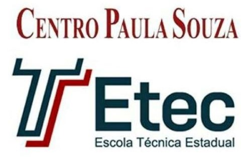

Início
Sobre
Fotos
Contatos
Apoios
Apoiadores e Incentivadores
Prefeitura de Lins
Prefeitura Municipal de Lins
Etec Lins

Escola Técnica Estadual Centro Paula Souza Unidade Lins
Lei Paulo Gustavo e Ministério da Cultura
Ministério da Cultura